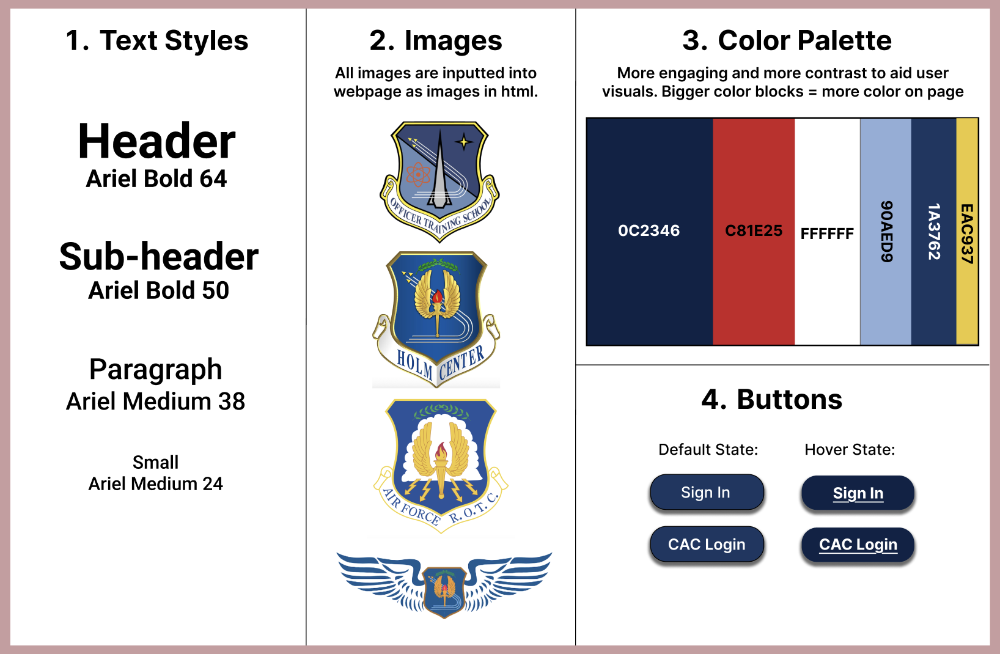
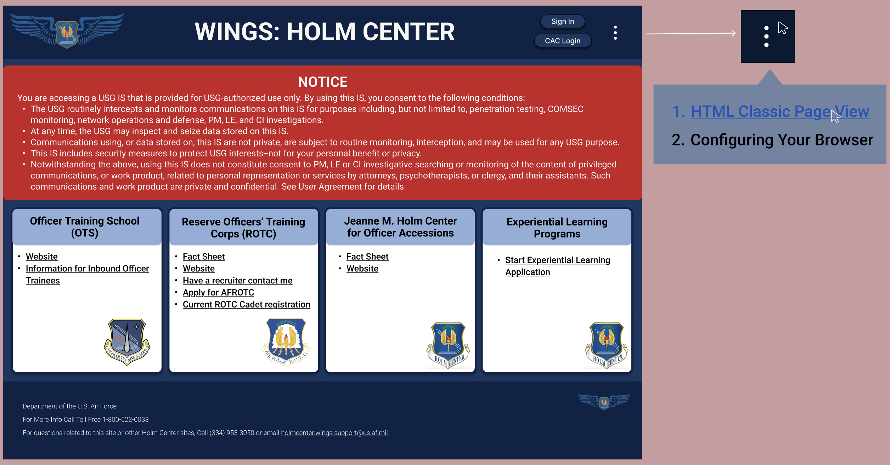
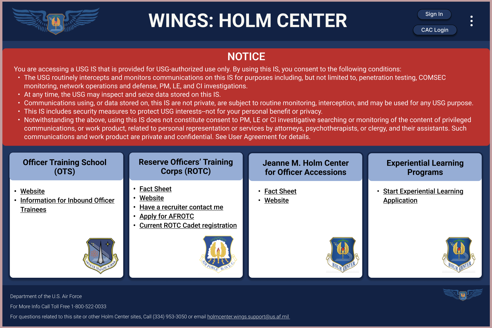
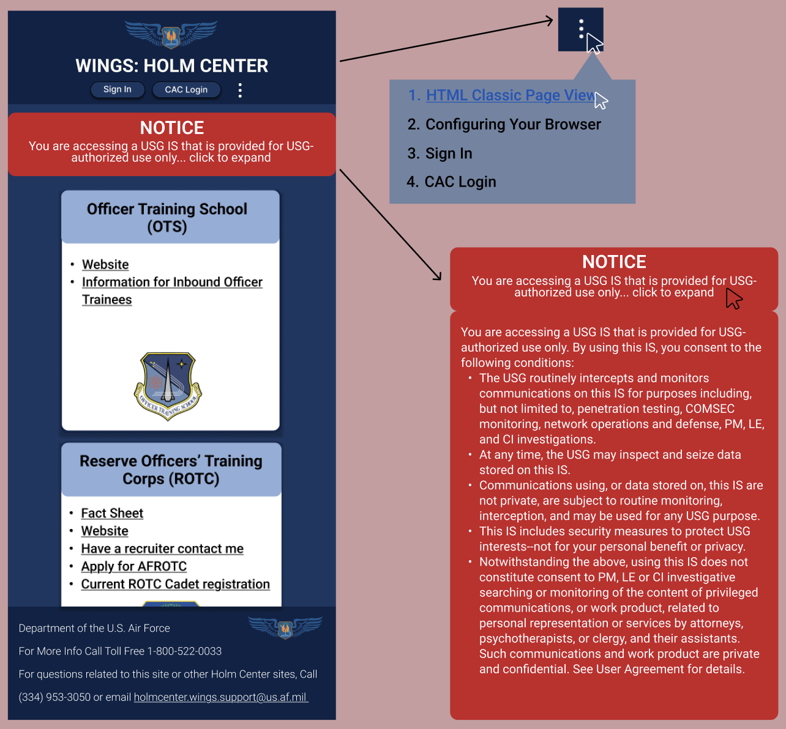

As an officer in the United States Air Force, it is common we must login to the Holm Center portal to do paperwork. Upon loading into
the Air Force's Holm Center Homepage, it is shocking to see how poorly designed it was. The text is nearly impossible to read, and it is difficult to
figure out where to login or even which buttons could be pressed! I decided to redesign their webpage as my own personal project.
I focused on improving the page's responsiveness and user functionality to help improve usability and therefore security. The more intuitive the design, the safer it is for everyday users to access.
Why Is There Need For Redesign?
Take a look at the images below or you can also click on the link and see the full original Holm Center website. What comes to mind upon first seeing the layout?
Below you will find some information describing what I found the design issues to be... click on the boxes to see more!
This webpage is only accessible if the user has access to a desktop computer with a mouse. Attempting to navigate through
the page using only a keyboard results in only being able to access 2 of the 13 major components. When trying to use the
webpage on a mobile device, the text becomes too small to read, components do not stack correctly, the user loses access
to two of the components in the navigation bar, and the overall functionality of the webpage falls apart.
When a user clicks any of the interactive components, they load in the same tab, causing
the user to have to either press the back button (which then usually results in improper loading of the webpage's
contents) or manually searching for the landing page again. This also negates the usability of the 'home button' in
the header, as once a user leaves the homepage, the icon disappears.
Upon accessing this webpage for the first time, it would be very difficult for users to
navigate the page without assistance. They would discover that 3 of the interactive components have no purpose (i.e.
You click the dropdown menu for there to be one option which is the same as the title of the dropdown menu). They would
also discover that a few of the boxes in the main content section are interactive buttons all with different hover
features, and the rest are not interactive at all.
The text is written in very fine, very small print which makes it difficult to read. This
is very important given the opening message on the site is meant to alert users to information security concerns upon
them logging into the site with their credentials. Additionally, the page has no clear hierarchy, making it confusing
for users to navigate. Lastly, the color palette is hard on the eyes due to poor contrast and coordination.
When accessing a United States military webpage, the typical user would assume the
webpage to be functional and well designed as the military provides the country's most highly-trained cybersecurity and
computer science specialists. Additionally, one would think the military wants to portray themselves as being
professional, attentive to detail, and excellent at what they do. This is not reflected in this webpage.
How did I go about redesigning this page?
Given the usability issues discussed on the conceptualize page, I knew I had to change the text sizes, color palette, and general layout design of the page. Below, you can see an image of the visual design style guide I created before starting to put together my mockups.

In order to have a fully accessible and functional site, I decided it would be crucial to have the webpage be fully responsive -
meaning it was viewable and usable on all different screen sizes. As this is a complicated task since the layout must change for various
screen types, I started by creating mockup designs before beginning to code the actual site. Below, you can see my mockup designs
for each screen size along with annotations describing how the accessibility and usability is improved. To help maintain layout regardless of
screensizes, I used combinations of flexbox, grid layouts, and CSS's @media function to specify specific redesigns for each screen.
DESKTOP MOCKUP:
All redundant and useless buttons were removed from the page increasing user efficiency without hindering
usability. All interactive components are designed with learnability in mind by maximizing their intuitive value. Additionally,
there is a clear hierarchy among components due to bigger text, improved layout, and contrasting colors.

TABLET MOCKUP:
When transitioning from a desktop view to a tablet view, everything remains the same, but some text sizes shrink
slightly along with the padding in the footer. Everything remains easily readable and digestible for new users.

PHONE MOCKUP:
As screen size continues to shrink towards the size of a phone screen, components begin to stack. With properly
stacked components that are fully responsive to changing screen sizes, all interactive components are and
remain accessible for all users. The notice collapses (unless prompted to expand by user interaction) but remains
the focus of the page to ensure users do not miss it.

Take a Look at my Final Product!
Click the button below to be taken directly to my redesigned site or scroll down to view images of the final webpage on
various screen sizes! Note that these images were input as screenshots and therefore are not interactive. To see the full
final design, please refer to the button below!